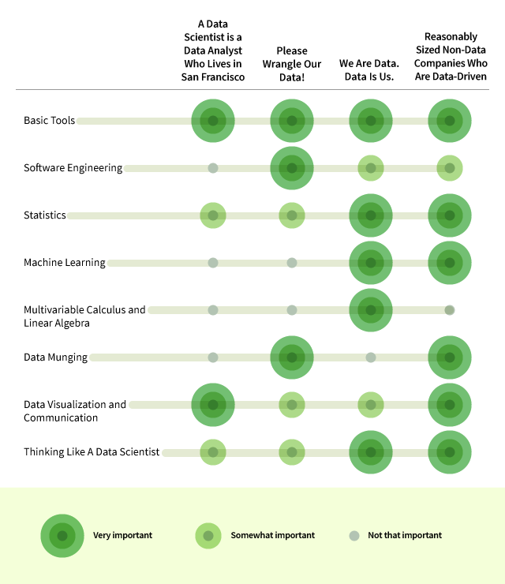

8 Skills You Need to Be a Data Scientist
Demystifying Data Science: 4 Kinds of Data Science Jobs and 8 Skills that Will Get You Hired
Interested in landing a job as a data scientist? You’re in good company – a recent article by Thomas Davenport and D.J. Patil in the Harvard Business Review calls ‘data scientist’ the sexiest job of the 21st century.
But how can you get your foot in the door? Many resources out there may lead you to believe that becoming a data scientist requires comprehensive mastery of a number of fields, such as software development, data munging, databases, statistics, machine learning and data visualization.
Don’t worry. In my experience as a data scientist, that’s not the case. You don’t need to learn a lifetime’s worth of data-related information and skills as quickly as possible. Instead, learn to read data science job descriptions closely. This will enable you to apply to jobs for which you already have necessary skills, or develop specific data skill sets to match the jobs you want.
4 Types of Data Science Jobs
“Data scientist” is often used as a blanket title to describe jobs that are drastically different. Here are four types of data science jobs:
A Data Scientist is a Data Analyst Who Lives in San Francisco: All joking aside, there are in fact some companies where being a data scientist is synonymous with being a data analyst. Your job might consist of tasks like pulling data out of MySQL databases, becoming a master at Excel pivot tables, and producing basic data visualizations (e.g., line and bar charts). You may on occasion analyze the results of an A/B test or take the lead on your company’s Google Analytics account. A company like this is a great place for an aspiring data scientist to learn the ropes. Once you have a handle on your day-to-day responsibilities, a company like this can be a great environment to try new things and expand your skillset.
Please Wrangle Our Data!: It seems like a number of companies get to the point where they have a lot of traffic (and an increasingly large amount of data), and they’re looking for someone to set up a lot of the data infrastructure that the company will need moving forward. They’re also looking for someone to provide analysis. You’ll see job postings listed under both “Data Scientist” and “Data Engineer” for this type of position. Since you’d be (one of) the first data hires, there are likely many low-hanging fruit, making it less important that you’re a statistics or machine learning expert. A data scientist with a software engineering background might excel at a company like this, where it’s more important that a data scientist make meaningful data-like contributions to the production code and provide basic insights and analyses. Mentorship opportunities for junior data scientists may be less plentiful at a company like this. As a result, you’ll have great opportunities to shine and grow via trial by fire, but there will be less guidance and you may face a greater risk of flopping or stagnating.
We Are Data. Data Is Us: There are a number of companies for whom their data (or their data analysis platform) is their product. In this case, the data analysis or machine learning going on can be pretty intense. This is probably the ideal situation for someone who has a formal mathematics, statistics, or physics background and is hoping to continue down a more academic path. Data Scientists in this setting likely focus more on producing great data-driven products than they do answering operational questions for the company. Companies that fall into this group could be consumer-facing companies with massive amounts of data or companies that are offering a data-based service.
Reasonably Sized Non-Data Companies Who Are Data-Driven: A lot of companies fall into this bucket. In this type of role, you’re joining an established team of other data scientists. The company you’re interviewing for cares about data but probably isn’t a data company. It’s equally important that you can perform analysis, touch production code, visualize data, etc. Generally, these companies are either looking for generalists or they’re looking to fill a specific niche where they feel their team is lacking, such as data visualization or machine learning. Some of the more important skills when interviewing at these firms are familiarity with tools designed for ‘big data’ (e.g., Hive or Pig) and experience with messy, ‘real-life’ datasets.
Hopefully this gives you a sense of just how broad the title ‘data scientist’ is. Each of the four company ‘personalities’ above are seeking different skillsets, expertise, and experience levels. Despite that, all of these job postings would likely say “Data Scientist,” so look closely at the job description for a sense of what kind of team you’ll join and what skills to develop.
8 Data Skills to Get You Hired
This is the core set of 8 data science competencies you should develop:
Basic Tools: No matter what type of company you’re interviewing for, you’re likely going to be expected to know how to use the tools of the trade. This means a statistical programming language, like R or Python, and a database querying language like SQL.
Basic Statistics: At least a basic understanding of statistics is vital as a data scientist. An interviewer once told me that many of the people he interviewed couldn’t even provide the correct definition of a p-value. You should be familiar with statistical tests, distributions, maximum likelihood estimators, etc. Think back to your basic stats class! This will also be the case for machine learning, but one of the more important aspects of your statistics knowledge will be understanding when different techniques are (or aren’t) a valid approach. Statistics is important at all company types, but especially data-driven companies where the product is not data-focused and product stakeholders will depend on your help to make decisions and design / evaluate experiments.
Machine Learning: If you’re at a large company with huge amounts of data, or working at a company where the product itself is especially data-driven, it may be the case that you’ll want to be familiar with machine learning methods. This can mean things like k-nearest neighbors, random forests, ensemble methods – all of the machine learning buzzwords. It’s true that a lot of these techniques can be implemented using R or Python libraries – because of this, it’s not necessarily a dealbreaker if you’re not the world’s leading expert on how the algorithms work. More important is to understand the broadstrokes and really understand when it is appropriate to use different techniques.
Multivariable Calculus and Linear Algebra: You may in fact be asked to derive some of the machine learning or statistics results you employ elsewhere in your interview. Even if you’re not, your interviewer may ask you some basic multivariable calculus or linear algebra questions, since they form the basis of a lot of these techniques. You may wonder why a data scientist would need to understand this stuff if there are a bunch of out of the box implementations in sklearn or R. The answer is that at a certain point, it can become worth it for a data science team to build out their own implementations in house. Understanding these concepts is most important at companies where the product is defined by the data and small improvements in predictive performance or algorithm optimization can lead to huge wins for the company.
”Data scientist” is often used as a blanket title to describe jobs that are drastically different.
Data Visualization & Communication: Visualizing and communicating data is incredibly important, especially at young companies who are making data-driven decisions for the first time or companies where data scientists are viewed as people who help others make data-driven decisions. When it comes to communicating, this means describing your findings or the way techniques work to audiences, both technical and non-technical. Visualization wise, it can be immensely helpful to be familiar with data visualization tools like ggplot and d3.js. It is important to not just be familiar with the tools necessary to visualize data, but also the principles behind visually encoding data and communicating information.
Software Engineering: If you’re interviewing at a smaller company and are one of the first data science hires, it can be important to have a strong software engineering background. You’ll be responsible for handling a lot of data logging, and potentially the development of data-driven products.
Thinking Like A Data Scientist: Companies want to see that you’re a (data-driven) problem solver. That is, at some point during your interview process, you’ll probably be asked about some high level problem – for example, about a test the company may want to run or a data-driven product it may want to develop. It’s important to think about what things are important, and what things aren’t. How should you, as the data scientist, interact with the engineers and product managers? What methods should you use? When do approximations make sense?
Data science is still nascent and ill-defined as a field. Getting a job is as much about finding a company whose needs match your skills as it is developing those skills. This writing is based on my own firsthand experiences – I’d love to hear if you’ve had similar (or contrasting) experiences during your own process.